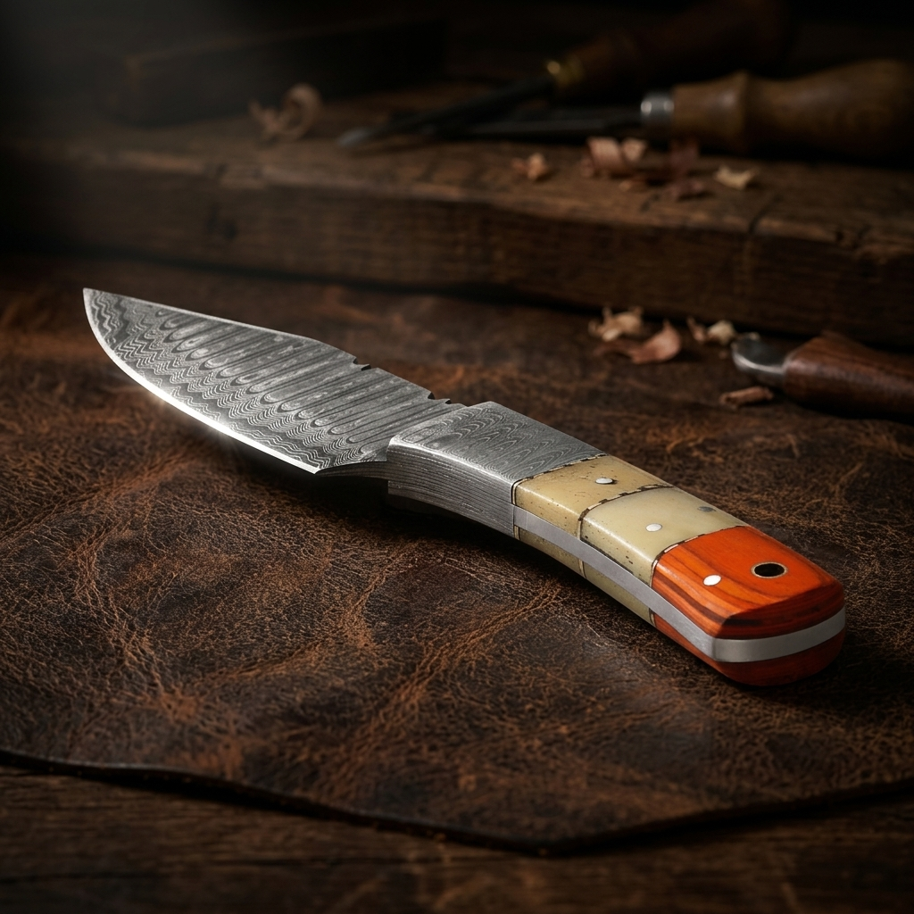
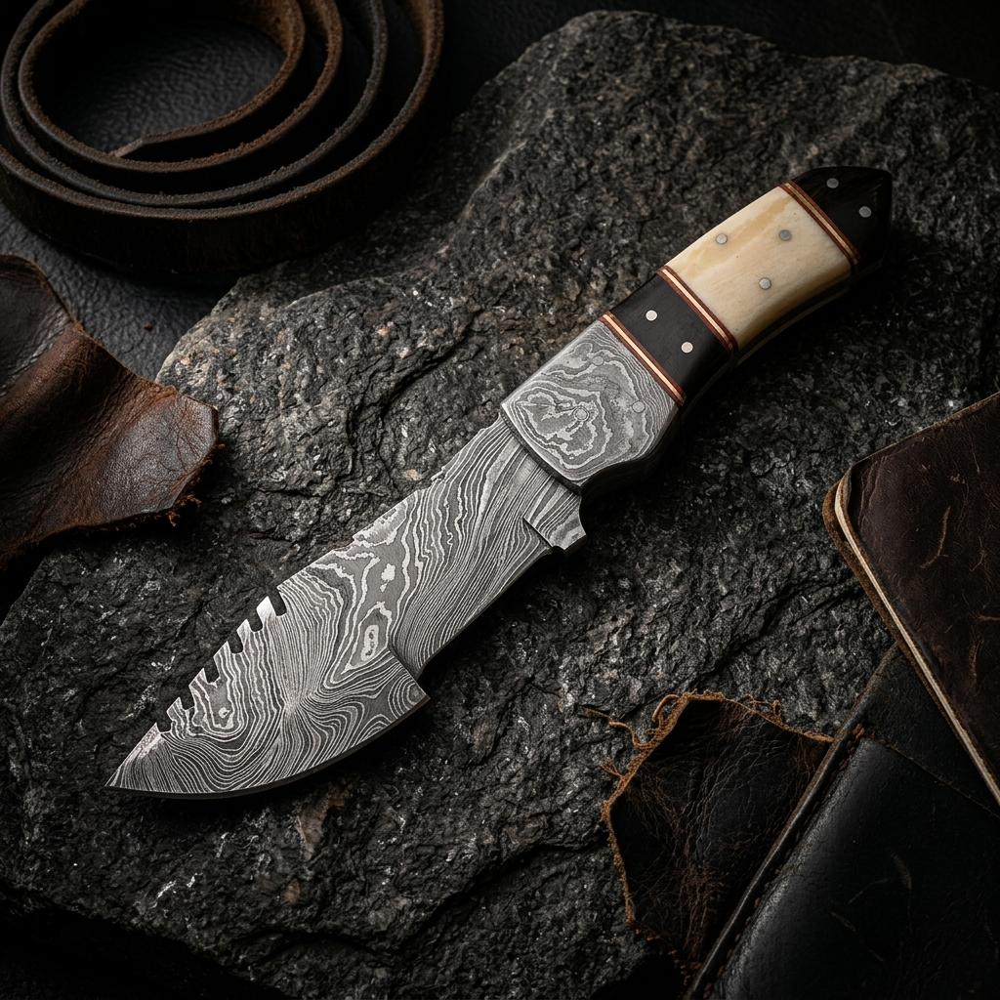

Ultimate Buying Guide for Handmade Knives

By Master Usman
Master Bladesmith • 15 Min Read • Technical Field Notes
Welcome to the world of handmade knives, where art meets function. If you're searching for a top-quality, unique blade, you're in the right spot. Handmade knives are more than tools; they're art pieces that can enhance your cooking, your outdoor activities, or even stand out as a collector's treasure. To buy the right handmade knife, having an expert guide is crucial.
In this guide, we'll cover everything you need to know to pick your ideal handmade knife. We'll explore the craftsmanship, types, and materials available. Whether you're a seasoned collector or new to buying knives, this guide will help you find the perfect handmade knife.
bookmark Key Takeaways
- • Handmade knives are a perfect mix of artisan craftsmanship and functional utility.
- • A thorough buying guide protects your investment and ensures a smart choice.
- • There are distinct design choices depending on kitchen vs. rugged survival use.
- • Understanding blade steel alloys (like high-carbon Damascus) and handle balance is key.
- • Handmade knives represent high collector value and family-heirloom longevity.
01 / Understanding Handmade Knives: Artistry Meets Function
Handmade knives are a blend of art and utility, making them a great addition to any collection. With a buying guide, you can discover the different handmade knives out there, like kitchen, outdoor, and collector's knives. Knowing what each type offers helps you choose the best one for your needs.
The Craftsmanship Behind Handmade Blades
Making handmade knives is a true labor of love. Artisans spend a lot of time choosing the best materials, like Damascus steel. They craft each blade with great care. This makes the knife not just useful, but also a piece of art.
Machine-Made vs. Handcrafted Knives
Machine-made knives have their benefits, but they can't match the personal touch and structural balance of handmade ones:
- ✓ Individual Touch: Handmade knives from Damascus Steel show the precise micro-adjustments of skilled artisans.
- ✓ Uncompromising Material Control: Artisans selectively hammer and temper steel, ensuring superior toughness and edge retention.
- ✓ Custom Fitting: From the handle bolster to the weight point, handmade knives are built to feel organic in the hand.

02 / Essential Features of Quality Handmade Knives
When looking at high-quality handmade chef knives, several important features stand out. These include the type of steel, the handle's ergonomics, the knife's balance, and the blade's sharpness. Knowing these essential features helps you choose a knife that fits your needs, whether you're a chef or an outdoor lover.
A good handmade knife should feel comfortable in your hand, be balanced, and have a sharp edge. The edge should stay sharp for a long time. Some key traits of high-quality handmade chef knives are:
- • High-carbon steel blades: Offers unparalleled durability, easier sharpening, and exceptional edge alignment.
- • Ergonomic handle materials: Handles made from organic elements like dense wood, processed bone, or rugged antler provide natural slip-resistance.
- • Perfect weight distribution: Ensures effortless cutting and reduces wrist fatigue under heavy culinary or woodcraft workloads.
- • Bespoke hand-honed edge: Hand-finished by the bladesmith for surgical cutting accuracy right out of the forge.
03 / Types of Handmade Knives for Different Uses
Handmade knives come in many types, each for a specific use. Whether you love cooking, enjoy the outdoors, or collect knives, there's one for you.
Exclusive handmade kitchen knives are loved for their sharpness, balance, and beauty. They're more than tools; they're an extension of the chef's hand. On the other hand, the best handmade camping knives are tough and practical. They're made for outdoor adventures and heavy-duty tasks.
| Type of Knife | Materials | Examples |
|---|---|---|
| Kitchen and Culinary Knives | High-carbon steel, stainless steel | Chef's knife, paring knife, bread knife |
| Outdoor and Survival Knives | High-carbon steel, titanium, Damascus core | Hunting knife, camping knife, survival tracker |
04 / What to Look For: Steel, Handle, & Balance
Buying handmade knives involves several key factors. A good guide helps you understand these and find the right knife. Look at blade and handle materials, and balance. This ensures you get a knife that lasts and meets your needs.
1. Blade Materials and Steel Types
The steel type in the blade is crucial. Different steels offer durability, sharpness, and maintenance needs. For example, high-carbon steel is strong and holds a razor-edge well, while stainless steel offers excellent corrosion resistance.
2. Handle Materials and Ergonomics
The handle material and ergonomics matter just as much. A comfortable handle makes the knife easier and safer to use. Custom makers use natural olive woods, polished water buffalo bone, and antler burls to create breathtaking grips.
3. Balance and Weight Considerations
Balance and weight are also key. A balanced knife feels right in your hand and works best. Use this guide to find a knife that's perfect for you and lasts long.
05 / Damascus Steel: Understanding the Living Legend
Buying handmade knives made from Damascus steel is more than a purchase. It's like getting a piece of history. Damascus Steel is famous for its unique flowing patterns and unmatched core strength. This makes it a favorite among knife lovers worldwide.

Making Damascus steel is a complex process. It involves repeatedly folding and hammer-welding the steel to remove impurities. This creates a pattern that's both stunning and practical.
The skill needed for this process is why handmade Damascus steel knives are so highly valued. They are known for:
- ✓ Exceptional strength and structural flexibility
- ✓ Distinctive wave patterning making each blade a 1-of-1 original
- ✓ Extreme dynamic sharpness retention and edge alignment
06 / Pricing and Value Assessment
Buying high-quality handmade chef knives or exclusive handmade kitchen knives requires understanding prices and value. The cost varies based on materials, forge difficulty, and the maker's reputation.
These knives are often worth more over time. Exclusive handmade kitchen knives can become treasured family heirlooms. They last long and showcase exquisite cultural craftsmanship.
Price Range Expectations
While pricing can scale based on details, typical ranges include:
$200 - $500
Simple handle burls, basic pattern welded folds, functional utility.
$500 - $1,500
Exotic wood handle scales, advanced twisting Damascus, custom bolster rivets.
$1,500 - $5,000+
Rare bone handle, intricate mosaic pins, museum-grade signature works.
07 / Choosing the Right Blade Shape and Size
When picking the best handmade camping knives or kitchen tools, the blade's shape and size matter a lot. You need a knife that can do many tasks, like cutting branches and preparing food. The right shape and size ensure your knife is always up for the job.
-
straighten
Blade Length: A longer blade is great for chopping and broad cutting, but it's heavier and harder to carry. Focus on 7-9 inches for general versatile utility.
-
architecture
Blade Shape: Sweeping curved blades (like Skinner or Bowie curves) are optimal for slicing and hide preparation, while straight, thick-spined profiles are best for rugged splitting and batoning.
-
swipe
Handle Dimensions: A handle that feels ergonomically fit to the thickness of your hand is critical to prevent slipping and ensure safe leverage.
08 / Maintenance and Care for Your Handmade Knife
To keep your handmade knife in top shape, regular care is key. This means cleaning and storing it right to avoid rust. You also need to learn how to sharpen it and protect the handle and metal parts.
Cleaning & Storage
For cleaning, mild soap and warm water are best. Stay away from harsh chemicals and dishwashers. Dry completely and store somewhere dry to prevent moisture rust.
Sharpening Techniques
Sharpening takes skill. Use a premium whetstone at a consistent 15-20 degree angle. Apply light pressure and move smoothly heel-to-tip. Avoid grinding wheels.
Preservation Methods
To keep Damascus steel and organic handles protected, apply a light coat of mineral oil or wax occasionally. This seals out moisture and keeps burls from drying out.
09 / Working with Custom Knife Makers
Working with a custom knife maker can be a highly rewarding experience. You can get exclusive handmade kitchen knives or high-quality chef knives that fit your exact needs. It's important to know how to work with a custom knife maker for a successful project:
- → Clear Communication: Outline your intended knife use, preferred steels, and handle shapes.
- → The Design Phase: Review blueprints or prototype sketches with the artisan.
- → Patience: Respect the heating, cooling, forging, and hand-polishing timelines.
| Benefits | Description |
|---|---|
| Unique design | Custom knife makers can create one-of-a-kind designs that reflect your personality and style. |
| High-quality materials | Custom knife makers use high-quality materials, such as premium steel and handle materials, to create durable and long-lasting knives. |
| Personalized service | Custom knife makers provide personalized service and attention to detail, ensuring that your knife meets your specific needs and expectations. |
10 / Common Mistakes to Avoid
Investing in handmade knives is a big deal. It's like any other investment, needing careful thought. Knowing common mistakes helps you find the right knife for you:
| Mistake | Consequence | Prevention |
|---|---|---|
| Not researching the maker's reputation | Poor quality knife, high failure rate | Research the maker's reputation and verified certifications online. |
| Neglecting handle ergonomics | Uncomfortable to use, muscle cramps | Request handle specifications or trace grip alignments before buying. |
| Overlooking material quality | Knife may rust, warp, or chip easily | Verify Damascus folding layers and handle sealant processes. |
11 / Legal Considerations & Knife Laws
As a proud owner of handmade knives, knowing the legal side is key. It's important to understand the laws about owning and moving these special items. This knowledge helps you stay out of trouble and enjoy your knife without stress.
It's vital to learn about the laws in your state and area for handmade knives. Laws can change a lot, so knowing the rules in your place is crucial. For instance, some places limit blade length or type, while others have rules about carrying knives in public.
Compliance Checklist
-
✓
State & Local Regulations: Research laws in your state/municipal area. Understand limits on blade lengths (often 3-5 inches for EDC carry) or locking mechanisms.
-
✓
Transportation Guidelines: When moving knives in vehicles, keep them locked securely in a compartment or sheath. Declare all custom knives if traveling through airports or check-points.
-
✓
International Shipping: For imports/exports, check customs policies on folding knives, double edges, or materials listed on protective conservation lists (like rare horn or bones).
Conclusion: Secure Your Craft Investment
Investing in a handmade knife is more than just buying something. It's a chance to own a piece of art that will last for years. Whether you love cooking, enjoy the outdoors, or collect knives, your handmade knife will be a trusted friend. It shows the skill and passion of its maker.
Take good care of your handmade knife, and it will serve you well for a long time. It will be a valuable tool and a beautiful piece. Start this journey with confidence. Your handmade knife will be a treasure for you and your family for years to come.